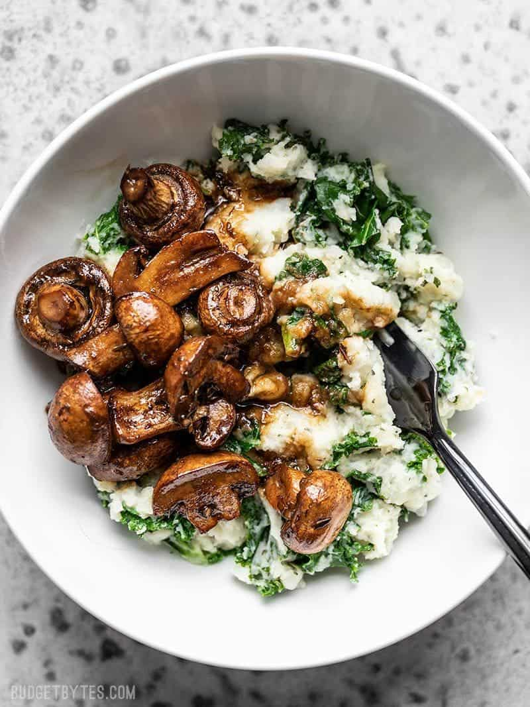

Roasted Mushrooms with Herby Kale Mashed Potatoes

These Balsamic Roasted Mushrooms with Herby Kale Mashed Potatoes are a vegetarian meal that will please any "meat and potatoes" style meal lover.
To make this meal vegan, simply replace the mashed potato recipe below with my Olive Oil Mashed Potatoes. You can stir kale or spinach into the olive oil mashed potatoes, just like they’re added to the sour cream mashed potatoes below.
This dish holds up super good in the refrigerator, so it’s perfect for meal prep! I probably won’t have a chance to test it in the freezer though, because I’m eating through it so fast.
Ingredients
- 1 lb mushrooms
- 1 tbsp olive oil
- 3 tbsp balsamic vinegar
- 1/2 tbsp brown sugar
- 1 tbsp soy sauce
- 1/4 tsp dried thyme
- 2 lb russet potatoes
- 6 oz. kale, chopped
- 1 tbsp olive oil
- 3/4 tsp salt
- 1/2 cup sour cream
- 1/2 cup milk
- 1 tsp dried parsley
- 1/2 tsp dried oregano
- 1/2 tsp dried basil
- 1/4 tsp garlic powder
- 1/4 tsp onion powder
- freshly cracked pepper
Steps
- Preheat the oven to 400ºF. Wash the mushrooms and cut them in half if they are large.
- In a small dish, stir together the olive oil, balsamic vinegar, brown sugar, soy sauce, minced garlic, and thyme. Place the mushrooms in a casserole dish big enough to allow them to be in a single layer. Pour the balsamic marinade over top and stir until the mushrooms are coated.
- Transfer the the mushrooms to the preheated oven and roast for 45 minutes, giving them a stir every 15 minutes. After 45 minutes the mushrooms should be tender and there should be a nice sauce in the bottom of the dish.
- Meanwhile, prepare the mashed potatoes. Peel and dice the potatoes into one-inch cubes. Rinse the cubes well in a colander, then place them in a large pot, add 1/2 tsp salt, and cover with cool water. Place a lid on the pot, bring it up to a boil. Boil the potatoes until they are very tender (about 7-10 minutes).
- Once the potatoes are very tender, drain them in the colander and rinse them briefly with hot water. Let the potatoes drain in the colander as you prepare the kale.
- To the pot used to boil the potatoes, add the chopped kale, 1 Tbsp olive oil, and 2 Tbsp water. Sauté over medium heat just until wilted (3-5 minutes), then remove the kale from the pot.
- Return the drained potatoes to the pot along with the sour cream, milk, dried parsley, oregano, basil, garlic powder, onion powder, 1/4 tsp salt, and some freshly cracked pepper. Mash the potatoes until smooth, then taste and add more salt if needed. Stir in the sautéed kale.
- To make the bowls, add 1/4 of the herby kale mashed potatoes to each bowl, then top with 1/4 of the balsamic roasted mushrooms. Drizzle a spoonful or two of the juices from the bottom of the casserole dish over the mushrooms and mashed potatoes.